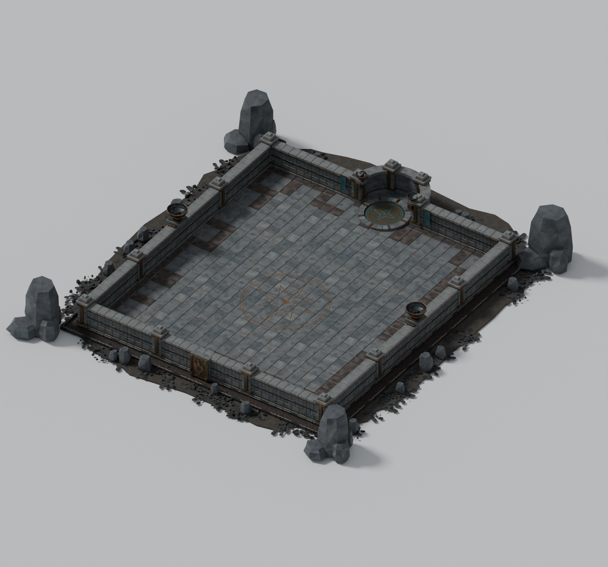
依照四张用户参考图制作。全部表面使用普通受光材质；熔岩为冷却外壳与暗橙裂隙的颜色表现。火盆未点燃，传送图案与中央铜纹没有自发光，也没有粒子或局部效果灯。
整体与组件组合
上方完整房间及新版材质对比为本次更新；以下局部与组件缩略图保留原制作版，用于说明结构。新版材质请查看对比页面或打开已更新的 Blender 文件。
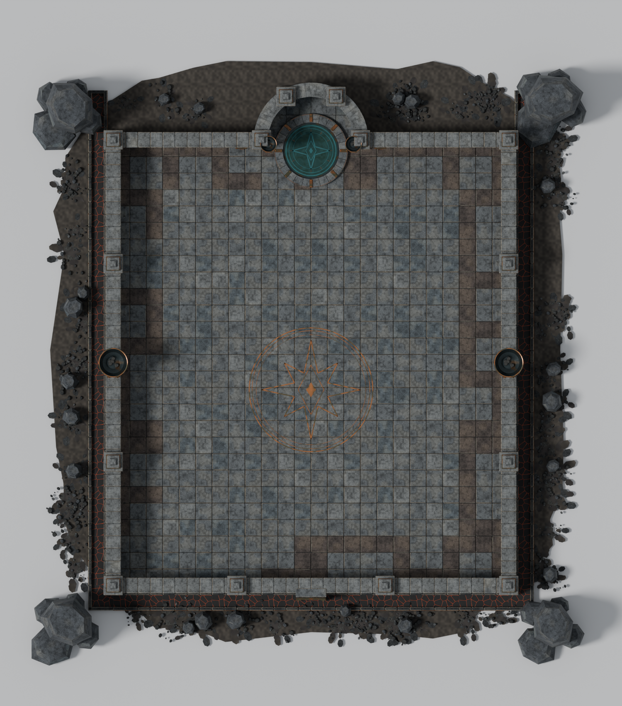
2048 × 2304 码标准内场，传送龛向后延伸。
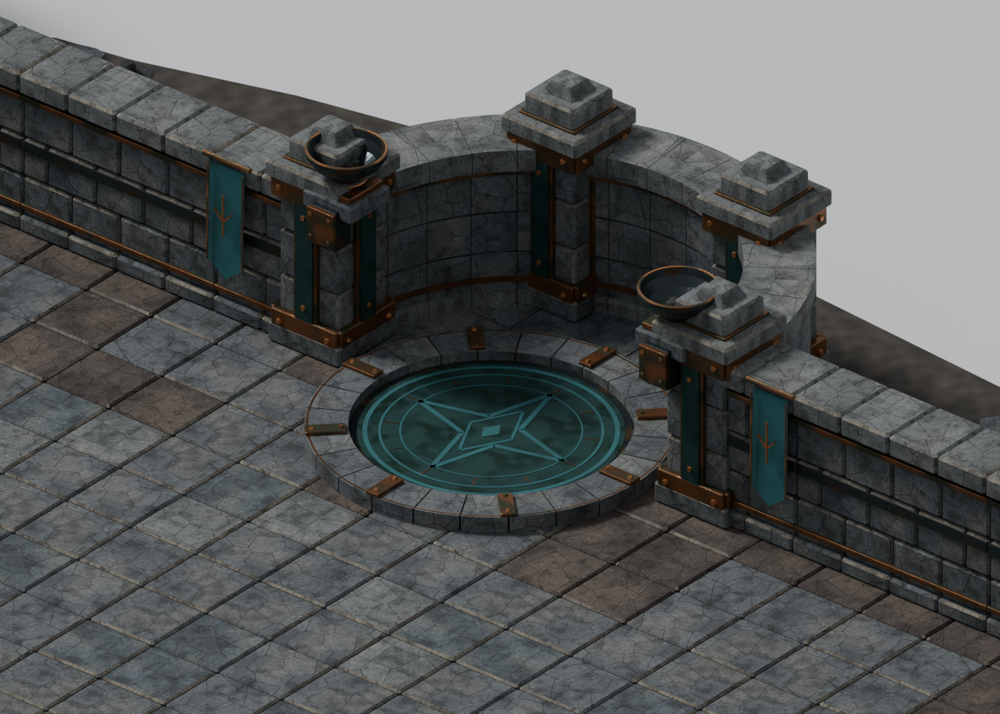
三段弧形背墙、独立石环与青色铜质嵌片。
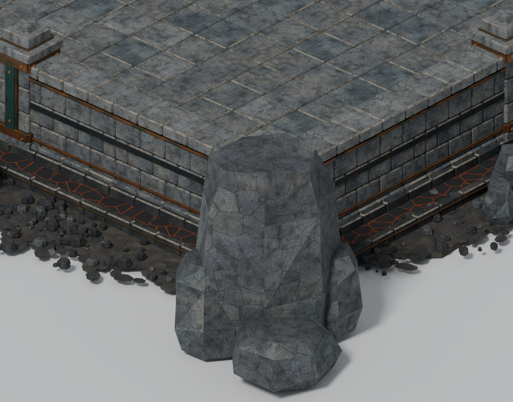
包铜墙柱、玄武岩、外围熔岩槽与焦灰过渡。
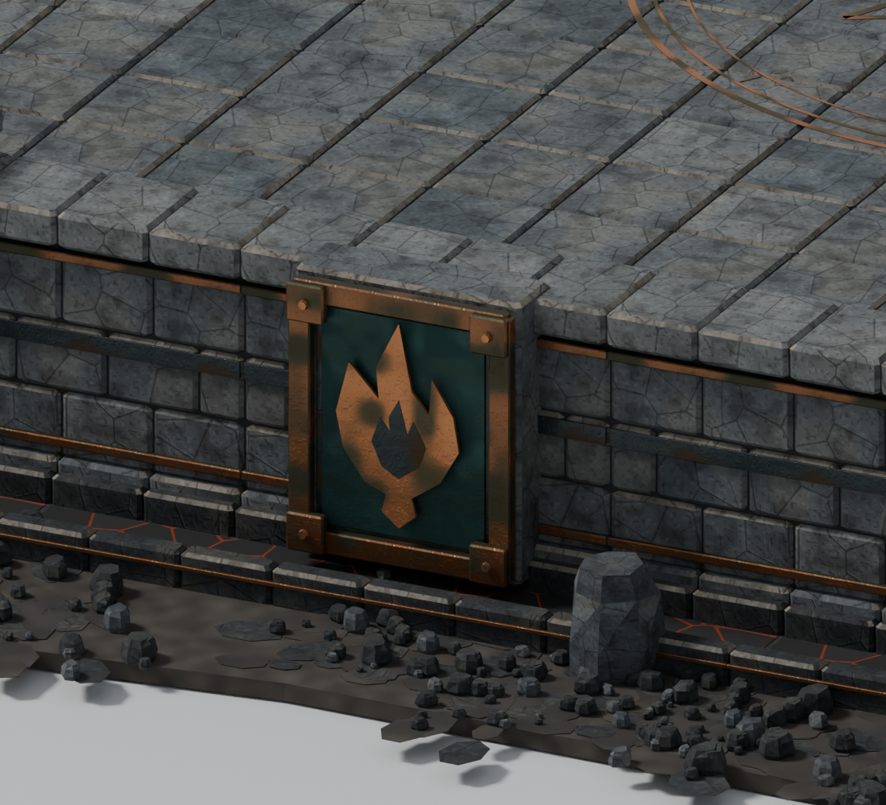
石碑和铜质火焰徽记可分别编辑。
原版材质 Workshop 实机记录
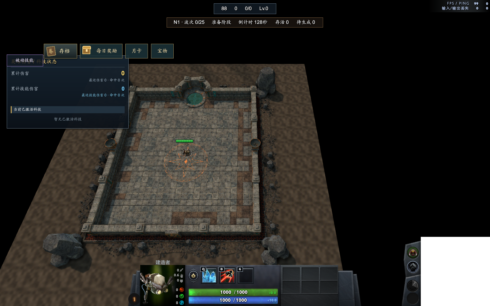
该截图为材质打磨前的导航检查，不能代表新版材质。实际画面，保留 HUD；实机检查记录与资源检查报告分别记录验证范围。
独立组件
F13 对应下方材质库；F15 的发光、火焰和粒子按要求省略；F16 为墙角组装样板与入口挂旗。
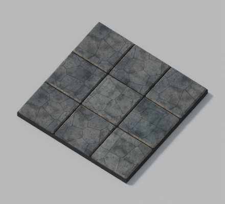
F01 标准玄武岩石板 A
552 三角面 · 独立 FBX
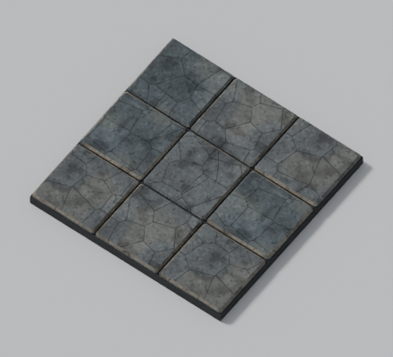
F01 标准玄武岩石板 B
552 三角面 · 独立 FBX
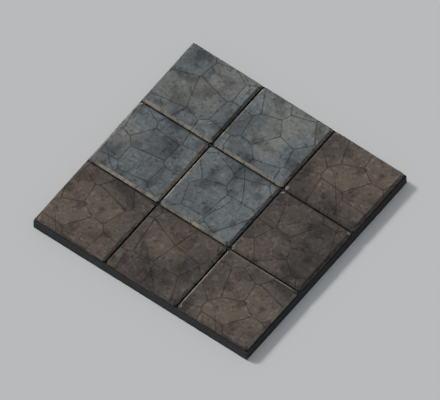
F02 焦痕石板
1,280 三角面 · 独立 FBX
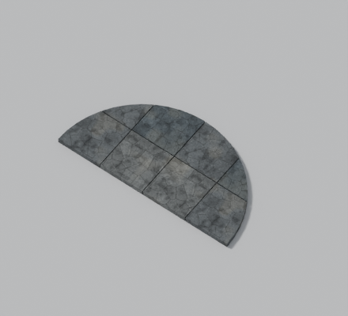
F01 传送龛半圆铺地
160 三角面 · 独立 FBX
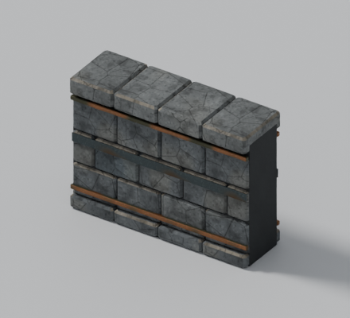
F03 直线墙段 256
1,632 三角面 · 独立 FBX
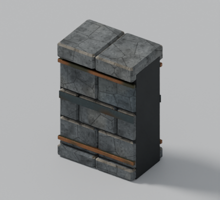
F03 直线墙段 128
1,032 三角面 · 独立 FBX
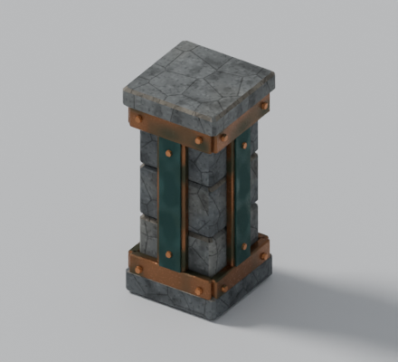
F04 包铜墙柱
1,932 三角面 · 独立 FBX
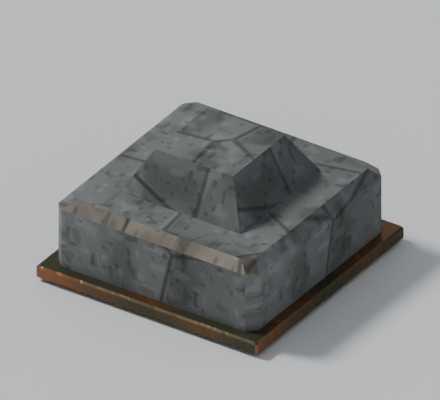
F04 可拆柱顶
132 三角面 · 独立 FBX
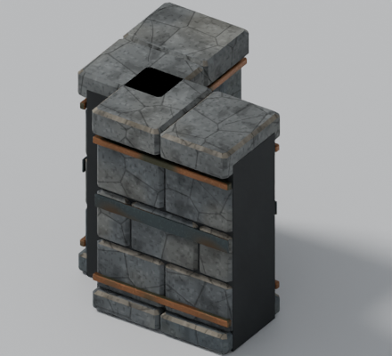
F05 直角墙段
2,064 三角面 · 独立 FBX
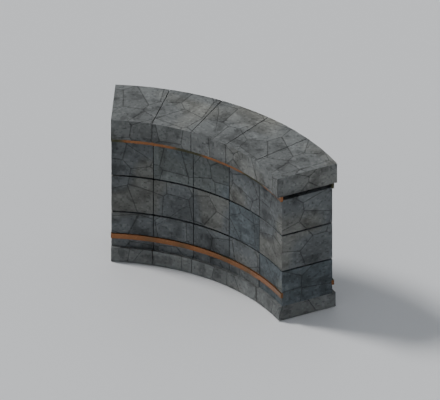
F06 弧形背墙 · 60 度
1,228 三角面 · 独立 FBX
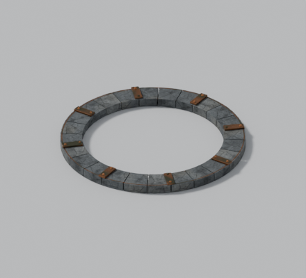
F07 传送底座石环
3,144 三角面 · 独立 FBX
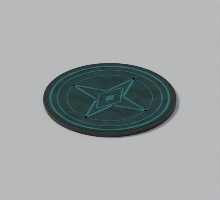
F07 铜质青色嵌片 · 无光
3,120 三角面 · 独立 FBX
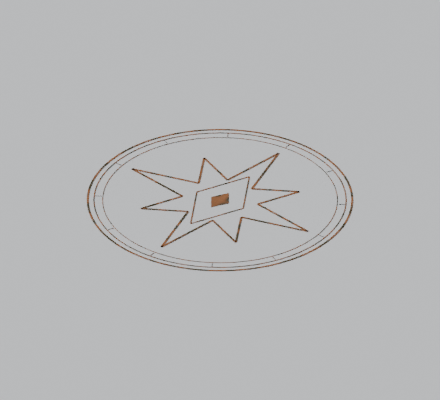
F08 中央平铺铜纹 · 无光
2,712 三角面 · 独立 FBX
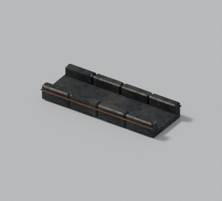
F09 熔岩槽直线外壳
612 三角面 · 独立 FBX
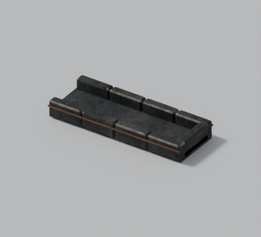
F09 熔岩槽封闭端头
672 三角面 · 独立 FBX
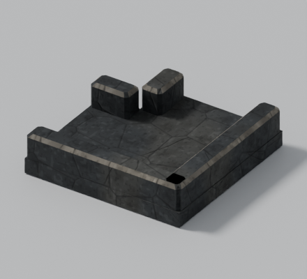
F09 熔岩槽直角外壳
260 三角面 · 独立 FBX
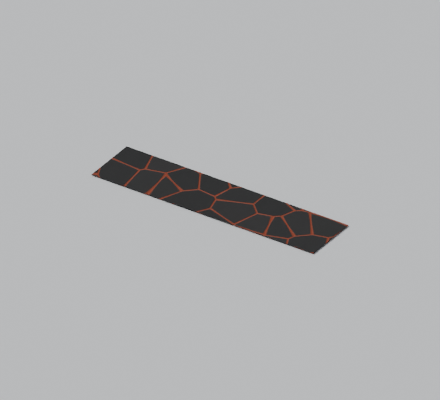
F09 独立熔岩表面 · 无光
12 三角面 · 独立 FBX
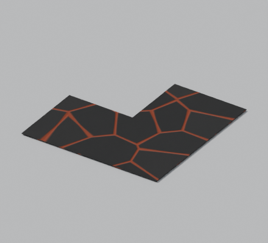
F09 独立熔岩表面 · 无光转角
20 三角面 · 独立 FBX
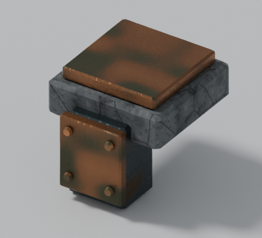
F10 炉火灯具支架
352 三角面 · 独立 FBX
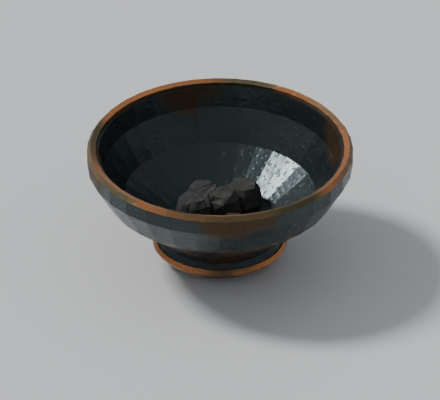
F10 暗铁铜边火盆 · 无火焰
2,224 三角面 · 独立 FBX
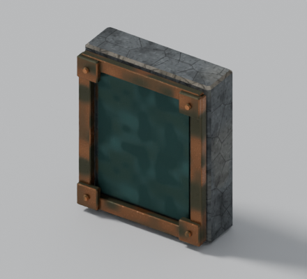
F11 火焰标识碑主体
772 三角面 · 独立 FBX
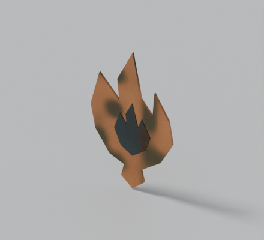
F11 独立铜质火焰徽记
108 三角面 · 独立 FBX
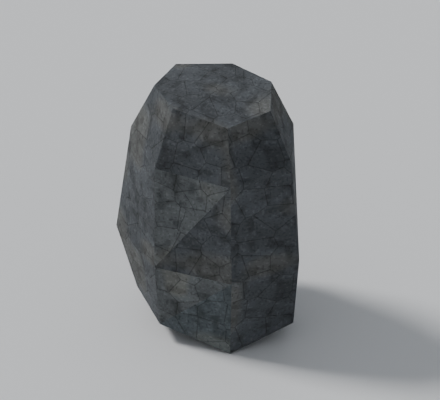
F12 大火山岩
52 三角面 · 独立 FBX
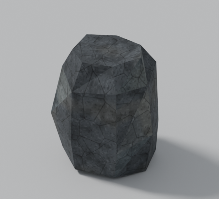
F12 中火山岩
52 三角面 · 独立 FBX
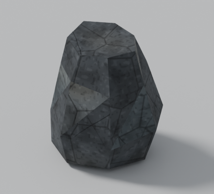
F12 小火山岩
52 三角面 · 独立 FBX
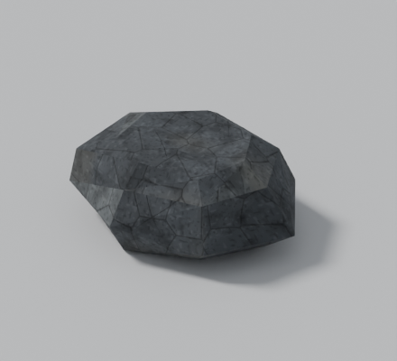
F12 扁平火山岩
52 三角面 · 独立 FBX
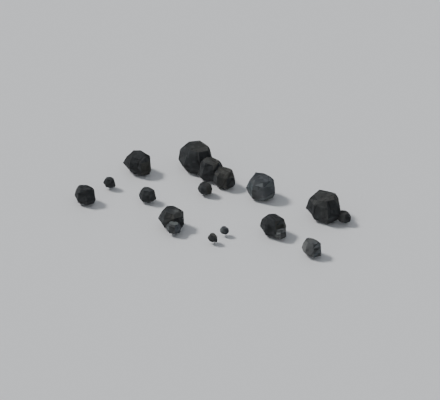
F14 火山碎石组
988 三角面 · 独立 FBX
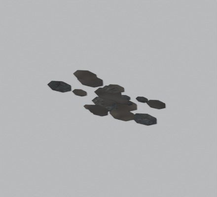
F14 不规则焦灰接地片
600 三角面 · 独立 FBX
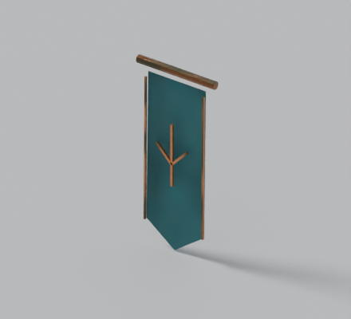
F16 入口青铜挂旗
104 三角面 · 独立 FBX
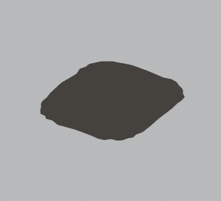
房间外围焦灰基底
188 三角面 · 独立 FBX
材质与表面
颜色、法线和粗糙度使用同一套裂隙、凹孔及氧化痕迹。每套贴图 1024 × 1024，Blender 已打包；游戏材质带法线与反射输入。
编辑与接入
Blender 包含 Molten Core Room - assembled 完整场景及 F01-F16 Modular Library 组件库。Hammer 资源位于 models/molten_core_room/；地图地面 Z=128，预制件含连续行走支撑与墙体碰撞。
保留现有挑战 07 使用的入口、home 与 boss_spawn 命名标记，并提供十个额外刷怪摆放参考点。正式地图替换、传送逻辑与挑战战斗联调尚未进行。